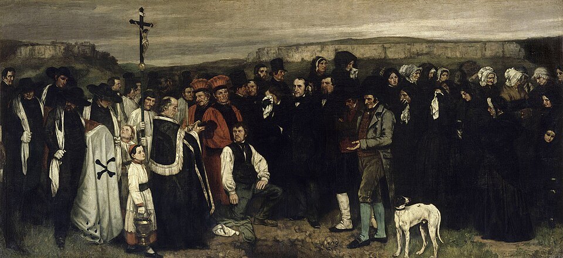
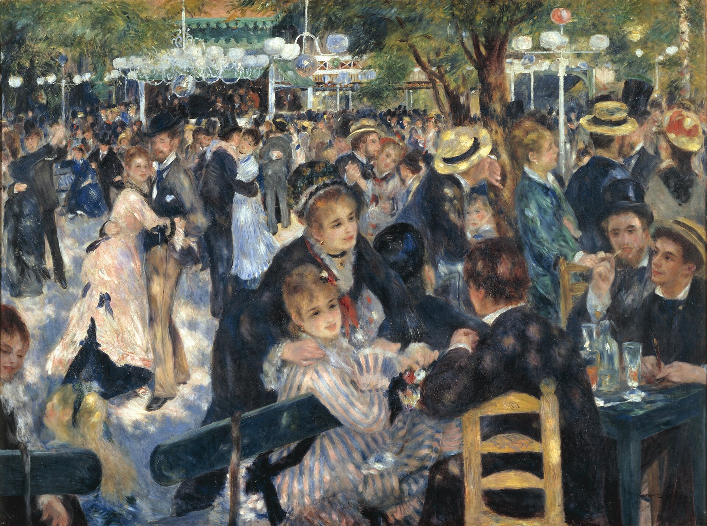
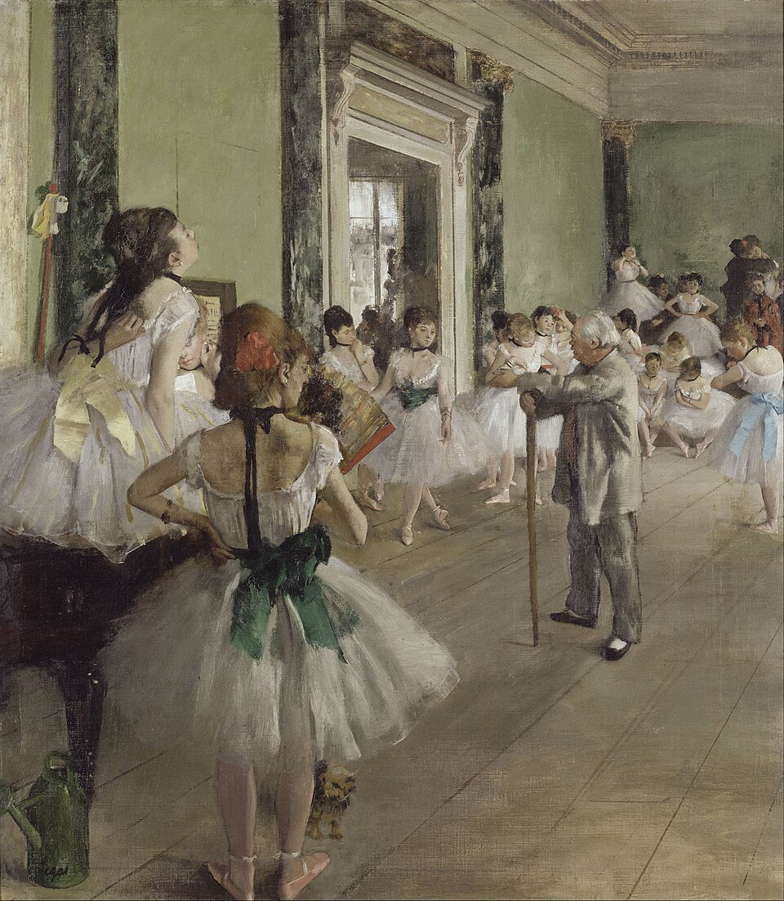
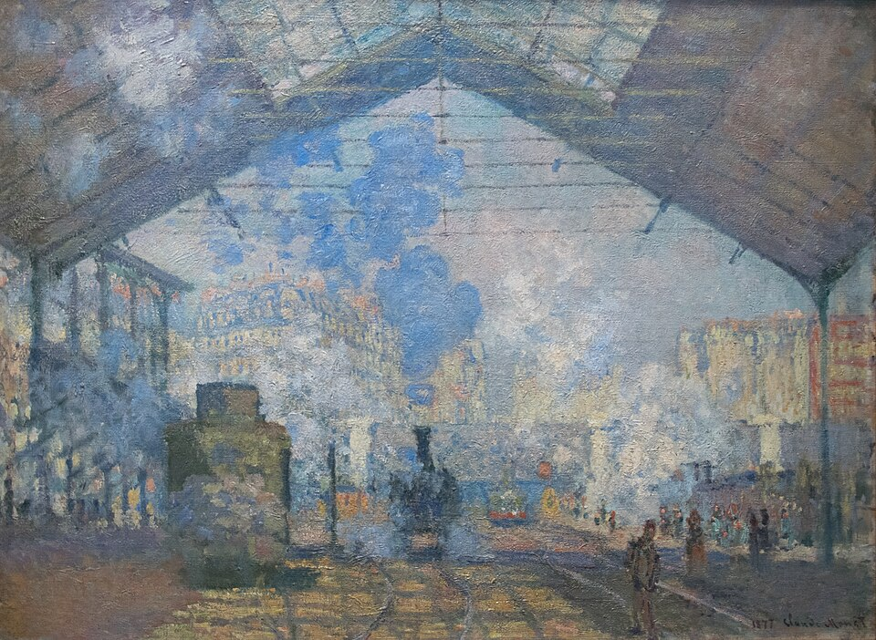
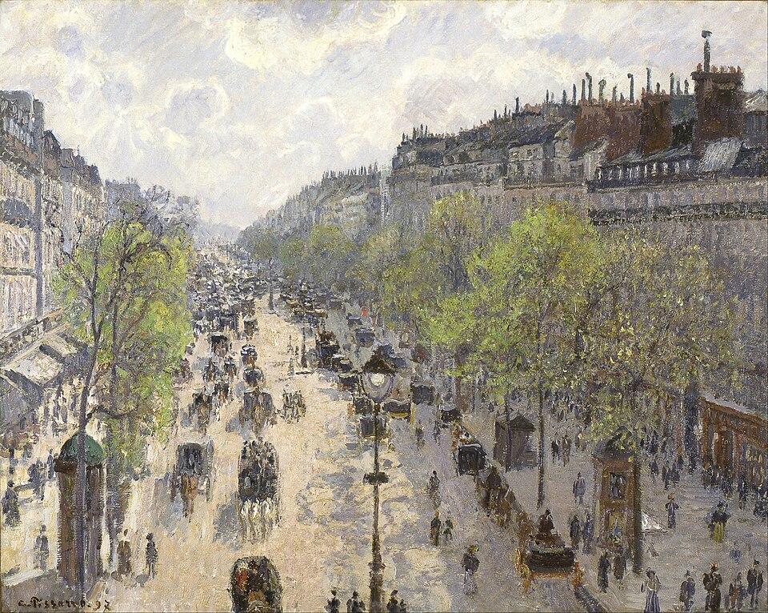

사실주의
사실주의가 “무엇을 그릴 가치가 있는가?”를 바꾸어 농민·노동자·도시의 평범한 사람과 현재를 회화의 주제로 만들었다면, 인상주의는 한 단계 더 나아가 “그 현실은 특정한 순간에 눈에 실제로 어떻게 보이는가?”를 질문했다. 고정된 사물의 본래 색보다 빛, 대기, 시간, 거리, 움직임에 따라 끊임없이 변하는 시각 경험을 포착하려 한 것이다.
인상주의의 혁신은 “붓질이 거칠어졌다”는 데 있지 않다. 더 근본적인 변화는 사물을 고정된 실체로 보지 않고, 특정 순간의 빛 속에서 보이는 시각 현상으로 보았다는 것이다.
나무는 항상 초록이고 눈은 항상 흰 것이 아니라, 빛과 반사광에 따라 전혀 다른 색으로 보일 수 있다.
빛은 물체를 보여주는 수단이 아니라 그림 자체의 핵심 주제가 된다.
아침·오후·안개·햇빛처럼 바로 지금의 짧은 조건을 포착한다.
붓자국을 숨기지 않고 짧고 분절된 터치로 빛의 떨림을 전달한다.
기차역, 카페, 무도회, 거리, 교외, 강변 등 현대 도시인의 일상이 주요 주제가 된다.

정확한 외관 기록을 기계가 수행할 수 있게 되면서 회화의 역할에 대한 질문이 커진다.
휴대하기 쉬운 튜브형 물감이 등장하여 야외에서 직접 작업하기가 한층 편리해진다.
넓은 대로·공원·카페·백화점·새로운 도시 경관이 만들어져 현대생활 자체가 새로운 주제가 된다.
공식 살롱에서 거부된 작품을 별도로 보여주는 전시가 열리며 아카데미 권위에 균열이 생긴다.
파리 시민과 화가들이 세느강과 교외의 여가 공간으로 쉽게 이동한다.
모네·르누아르·드가·피사로·모리조 등이 공식 살롱 밖에서 독립적으로 전시한다.
1874년 4월, 모네·르누아르·드가·피사로·모리조·시슬레 등은 사진가 나다르가 사용하던 파리의 작업실에서 공식 살롱과 독립된 전시회를 열었다.
| 공식 살롱 | 1874년 독립 전시 |
|---|---|
| 국가와 아카데미의 심사 | 화가들이 스스로 전시 조직 |
| 역사화·완성도·매끈한 표면을 중시 | 현대생활·야외 풍경·분절된 붓질 등 새로운 실험 |
| 작품이 선택되어야 공개 가능 | 공식 제도 밖에서 직접 관람객을 만남 |
카페, 무도회, 정원, 강변, 가족생활 등 새롭게 형성된 도시 중산층의 여가와 친밀한 일상을 밝은 색채로 그린다.
발레, 극장, 목욕, 실내생활 등을 독특한 시점과 잘린 구도로 포착한다. 드가는 야외 풍경보다 드로잉과 인체 연구를 특히 중시했다.




| 비교 항목 | 사실주의 | 인상주의 |
|---|---|---|
| 핵심 질문 | 현대 사회의 실제 모습은 무엇인가? | 현실은 지금 이 순간 눈에 어떻게 보이는가? |
| 주제 | 노동·농민·장례·도시의 계급 | 풍경·카페·무도회·기차역·대로·여가 |
| 관심 | 사회적 현실과 존재 | 빛·대기·색·시간·시각 경험 |
| 형태 | 대상이 비교적 견고하게 유지됨 | 윤곽이 빛과 대기 속에서 흔들림 |
| 색 | 대체로 물체의 실제색을 유지 | 반사광과 주변색에 따라 순간적으로 변화 |
| 붓질 | 화가에 따라 다양하나 형태 전달이 중심 | 짧고 분절된 붓질 자체가 시각 효과를 만듦 |
| 시간 | 사회의 지속적 현실 | 특정 시간·날씨·순간의 변화 |
| 관람자 | “사회를 보라.” | “보는 행위 자체를 느껴라.” |
1880년대 이후 일부 젊은 화가들은 인상주의가 순간의 빛과 시각에 너무 집중하면서 형태·구조·상징·감정·개인적 표현을 희생했다고 느꼈다. 여기서 후기 인상주의라고 묶이는 서로 다른 반응들이 나온다.
| 인상주의의 질문 | → | 후기 인상주의의 서로 다른 답 |
|---|---|---|
| 순간의 빛 | → | 세잔: 변하지 않는 구조와 형태를 다시 구축 |
| 눈에 보이는 색 | → | 반 고흐: 색을 감정과 정신의 표현으로 강화 |
| 현대생활의 관찰 | → | 고갱: 상징·기억·비서구 문화·내면으로 이동 |
| 자유로운 붓질 | → | 쇠라: 색채와 시각을 보다 체계적·과학적으로 분석 |
인상주의의 공통 핵심은 현대생활, 순간의 빛과 대기, 밝은 색채, 전통적 완성도에 대한 도전이었다. 다른 국가에서는 각자의 풍경과 도시생활에 맞추어 변형되었다.
| 국가·지역 | 특징 | 대표 화가 |
|---|---|---|
| 프랑스 | 파리의 현대도시, 교외의 여가, 세느강, 기차역과 카페를 통해 순간의 빛과 현대생활을 실험한 중심지였다. | 모네, 르누아르, 드가, 모리조, 피사로 |
| 미국 | 프랑스에서 공부한 화가들이 밝은 팔레트와 야외 제작을 받아들여 도시 상류층·정원·뉴잉글랜드 풍경 등에 적용했다. | 메리 카사트, 차일드 해섬, 존 싱어 사전트(부분적 연관) |
| 영국 | 프랑스 인상주의의 직접 복제보다는 안개·대기·도시의 현대성, 느슨한 붓질을 수용한 다양한 경향이 나타났다. | 월터 시커트, 필립 윌슨 스티어 |
| 호주 | 하이델베르크파가 강한 햇빛과 건조한 풍경, 개척지와 교외의 일상을 야외에서 그리며 호주적 인상주의를 발전시켰다. | 톰 로버츠, 아서 스트리튼 |